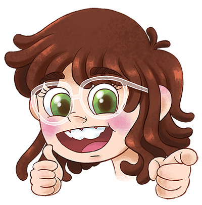

Mariana Zaro Garcea

Sobre mí
Soy una diseñadora gráfica y retocadora fotográfica con más de 10 años de experiencia en edición de imagen y producción visual. Especializada en retoque natural, corrección de color y composiciones realistas en Adobe Photoshop.
Cuento con amplia experiencia en fotografía de retrato, logrando resultados consistentes y de alta calidad, con gran atención al detalle y coherencia visual.
Actualmente también desarrollo mi perfil como ilustradora, con foco en estilos infantiles y juveniles, poniendo especial énfasis en el diseño de personajes, el color y la narrativa visual.
Resido en Argentina y estoy disponible para proyectos remotos, tanto locales como internacionales.
Habilidades
- Adobe Photoshop
- Retoque fotográfico
- Edición de imagen
- Corrección de color
- Composición y fotomontaje
- Diseño gráfico
- Narrativa visual
- Ilustración
- Diseño de personajes
- Edición básica de video
Formación
Universidad Nacional de Lanús
Licenciatura en Diseño y Comunicación Visual
2022 – Presente
Instituto de Enseñanza Superior en Lenguas Vivas “Juan Ramón Fernández”
Capacitación Superior en Lengua Inglesa
2009 – 2011
Escuela Argentina de la Historieta
Curso de Ilustración Tradicional y Digital
2010
Universidad Abierta Interamericana
Tecnicatura en Producción Audiovisual
2005 – 2009
Idiomas
- Español nativo
- Inglés C1
- Italiano A1
Experiencia
Retocadora Fotográfica y Diseñadora Gráfica
Rafael Enríquez Fotografía
2009-2023
- Retoque avanzado de fotografía de retrato y eventos
- Diseño de fotolibros, banners y piezas impresas
- Retoque de piel preservando texturas naturales
- Corrección de color y balance de exposición
- Fotomontaje y reemplazo de fondos
- Recorte de cabello y refinamiento de bordes
- Limpieza de imagen, eliminación de objetos y mejoras visuales
- Mejora de nitidez y corrección de foco suave
- Consistencia de calidad en grandes volúmenes de imágenes
- Atención al detalle y coherencia visual
Ilustradora
Proyectos personales y autogestionados
2025 - Presente
- Creación de ilustraciones originales para medios impresos y digitales
- Desarrollo de ilustraciones con orientación infantil y juvenil
- Diseño de personajes y narrativa visual
- Desarrollo de paletas cromáticas expresivas
- Diseño de portadas y maquetación completa de libros
- Integración de texto e imagen para storytelling
- Diseño de patrones y elementos decorativos
- Aplicación de tipografía
Customización de Muñecas y Creación de Contenido en YouTube
2018 – 2023
- Intervención y customización de muñecas coleccionables (Blythe y Pullip)
- Producción de videos de proceso, tutoriales y contenido creativo
- Edición básica de video y construcción narrativa
- Crecimiento del canal de YouTube hasta 9.000 suscriptores